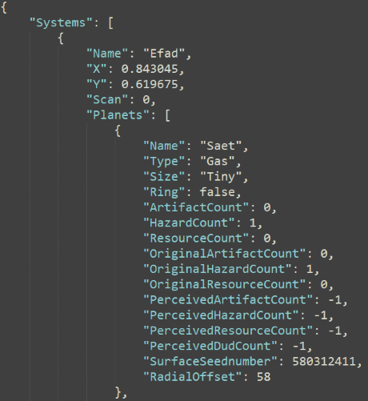

|
1/3: Random arena generation
|
2/3: 3D flight controls and camera | 3/3: Multiplayer space combat gameplay |
| 1/3: Play cards to match enemy weaknesses | 2/3: Cards can have different play mechanics |
3/3: In-editor game data tools

|
| 1/3: Space flight and fuel drain | 2/3: Star system scan and exploration | 3/3: JSON-based game data  |